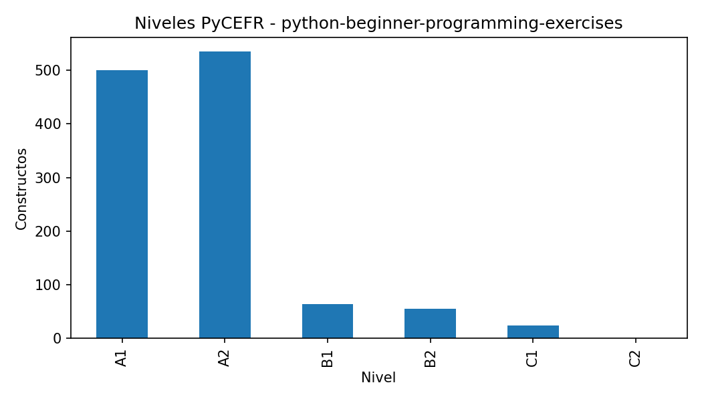
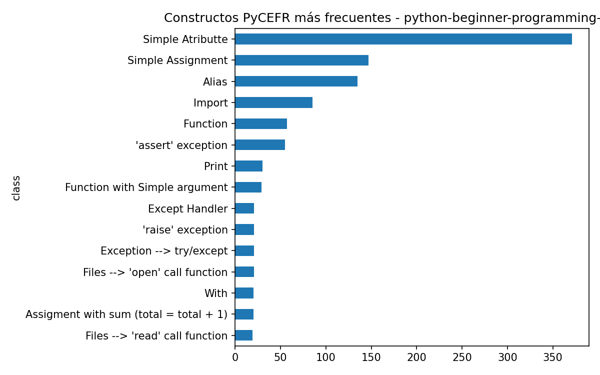
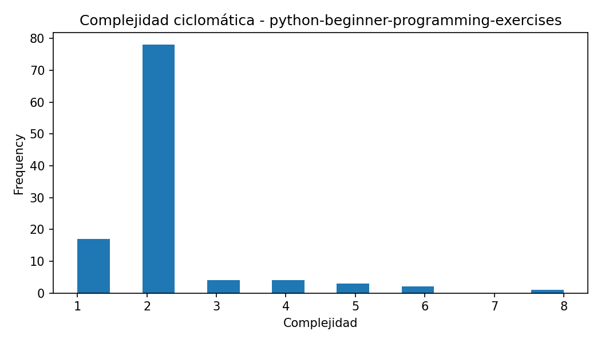
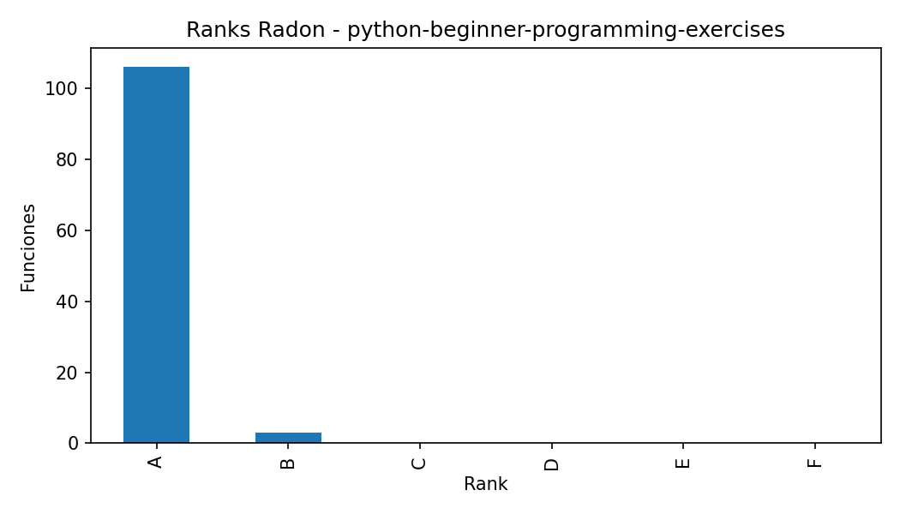
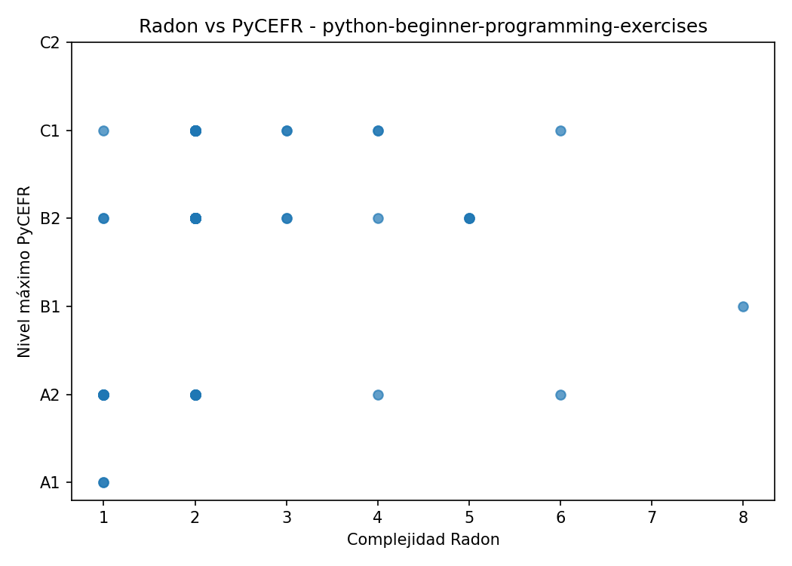

Constructos PyCEFR detectados: 1176
Clases PyCEFR distintas: 32
Nivel máximo PyCEFR: C1
Funciones Radon detectadas: 109
Complejidad máxima Radon: 8.0
Rank máximo Radon: B
Casos interesantes detectados: 46
Este caso contiene funciones donde las herramientas muestran patrones de coincidencia o discrepancia. Estos ejemplos son candidatos para comentarse en la memoria.
| class | count |
|---|---|
| Simple Atributte | 371 |
| Simple Assignment | 147 |
| Alias | 135 |
| Import | 85 |
| Function | 57 |
| 'assert' exception | 55 |
| 30 | |
| Function with Simple argument | 29 |
| Files --> 'open' call function | 21 |
| 'raise' exception | 21 |
| file_name | name | complexity | rank | lineno | endline |
|---|---|---|---|---|---|
| test.py | test_function_spin_chamber | 8 | B | 11 | 11 |
| test.py | test_for_function_output | 6 | B | 29 | 29 |
| solution.hide.py | fizz_buzz | 6 | B | 1 | 11 |
| test.py | test_for_file_output | 5 | A | 27 | 27 |
| test.py | test_for_file_output | 5 | A | 27 | 27 |
| test.py | test_function_return_no_static | 5 | A | 40 | 50 |
| test.py | test_function_output | 4 | A | 20 | 21 |
| test.py | test_function_returns_random_integer | 4 | A | 29 | 36 |
| test.py | test_for_return | 4 | A | 21 | 26 |
| solution.hide.py | sing | 4 | A | 2 | 11 |
| file_name | function | complexity | rank | max_level | n_pycefr_constructs | case_type |
|---|---|---|---|---|---|---|
| test.py | test_for_return | 4 | A | C1 | 147 | PyCEFR alto / Radon bajo |
| test.py | test_for_type_random | 2 | A | C1 | 68 | PyCEFR alto / Radon bajo |
| solution.hide.py | generate_random | 1 | A | A2 | 31 | Muchos constructos simples acumulados |
| test.py | test_use_variable_name | 2 | A | C1 | 25 | PyCEFR alto / Radon bajo |
| test.py | test_for_print | 2 | A | C1 | 85 | PyCEFR alto / Radon bajo |
| test.py | test_my_var1_exists | 2 | A | C1 | 152 | PyCEFR alto / Radon bajo |
| test.py | test_the_new_string_exists | 2 | A | C1 | 88 | PyCEFR alto / Radon bajo |
| test.py | test_function_returns_random_integer | 4 | A | C1 | 132 | PyCEFR alto / Radon bajo |
| test.py | test_function_exists | 3 | A | C1 | 122 | PyCEFR alto / Radon bajo |
| solution.hide.py | get_randomInt | 1 | A | A2 | 49 | Muchos constructos simples acumulados |
| solution.hide.py | spin_chamber | 1 | A | A2 | 27 | Muchos constructos simples acumulados |
| test.py | test_for_loop | 2 | A | C1 | 100 | PyCEFR alto / Radon bajo |
| solution.hide.py | standards_maker | 2 | A | A2 | 46 | Muchos constructos simples acumulados |
| test.py | test_for_loop | 2 | A | C1 | 100 | PyCEFR alto / Radon bajo |
| solution.hide.py | fizz_buzz | 6 | B | A2 | 97 | Radon alto / PyCEFR bajo; Muchos constructos simples acumulados |





Este informe se genera automáticamente. Las conclusiones finales deben revisarse manualmente para comprobar que los ejemplos seleccionados son representativos y adecuados para la memoria.